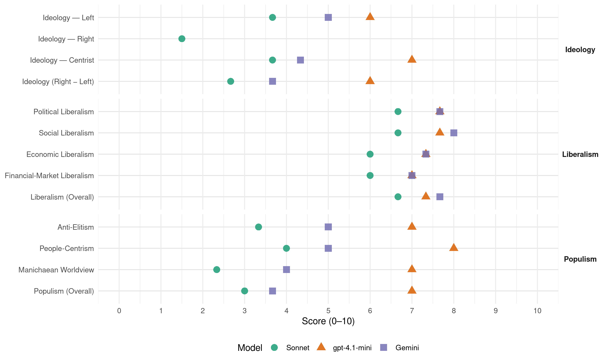

(Ireland, 1997)
manifesto_id 53620_199706
Get full text: This site shows derived annotations and short verbatim quotes only. The full manifesto text is © Manifesto Project / WZB — obtain it via manifesto-project.wzb.eu using the manifesto_id above.
Headline scores
| Dimension | Sonnet | gpt-4.1-mini | Gemini |
|---|---|---|---|
| Populism (Overall) | 3.0 | 7.0 | 3.7 |
| Anti-Elitism | 3.3 | 7.0 | 5.0 |
| People-Centrism | 4.0 | 8.0 | 5.0 |
| Manichaean Worldview | 2.3 | 7.0 | 4.0 |
| Ideology (Right − Left) | 2.7 | 6.0 | 3.7 |
| Liberalism (Overall) | 6.7 | 7.3 | 7.7 |
| Political Liberalism | 6.7 | 7.7 | 7.7 |
| Social Liberalism | 6.7 | 7.7 | 8.0 |
| Economic Liberalism | 6.0 | 7.3 | 7.3 |
| Financial-Market Liberalism | 6.0 | 7.0 | 7.0 |
Evidence per dimension
Economic Liberalism
Gemini · score 8.0 · verified · chunk 1
“fund growth-stimulating tax cuts”
is to contain spending and to fund growth-stimulating tax cuts out of what can be prudently afforded.
Gemini · score 7.0 · verified · chunk 2
“encourage partnerships between state and private sector funding”
and the points system. - Encourage partnerships between state and private sector funding in sport and leisure projects, and create tax
Gemini · score 7.0 · verified · chunk 3
“We support competition in broadcasting”
the capital costs and sustainability of the venture We support competition in broadcasting, and we want TV3 to succeed.
gpt-4.1-mini · score 8.0 · verified · chunk 1
“Prudently managing the economy for sustainable growth”
Prudently managing the economy for sustainable growth. Fianna Fáil in government will Make prudent management of our national finances the overriding policy objective of government, as the best way to sustain a better life for all in the challenging times ahead.
gpt-4.1-mini · score 7.0 · verified · chunk 2
“We will encourage partnerships between state and private sector funding in sport and leisure projects”
…We will encourage partnerships between state and private sector funding in sport and leisure projects, and create tax reliefs and other incentives for private investors to stimulate maximum interest in the sector. - Invite proposals for the construction of a 50-metre swimming pool, to serve both as an international arena and as a quality training facility. This project will be a headline for the type of joint venture between the public and private sectors which are necessary for to provide adequate facilities nationwide…
gpt-4.1-mini · score 7.0 · verified · chunk 3
“Fianna Fáil will provide those freedoms”
Giving the companies freedom to grow. If the state companies are to perform and succeed in an open market, then they must have commercial freedoms on a par with their competitors. Fianna Fáil will provide those freedoms. By the same token, the cost of public service obligations, which are proper and unavoidable, must be borne by all the players in the market not just the state companies.
Sonnet · score 6.0 · verified · chunk 1
“pro-enterprise attitude”
Enterprise development that has been inhibited by the inconsistent attitude of a government which lacks a strong pro-enterprise attitude.
Sonnet · score 6.0 · verified · chunk 2
“reduce Corporation Tax for all companies to 10%”
Fianna Fáil’s long-term aim is to reduce Corporation Tax for all companies to 10% by 2010.
Sonnet · score 6.0 · verified · chunk 3
“commercial freedoms on a par with their competitors”
state companies are to perform and succeed in an open market, then they must have commercial freedoms on a par with their competitors.
Financial-Market Liberalism
Gemini · score 8.0 · verified · chunk 1
“especially in lower interest rates”
EMU has potentially great benefits for the nation, especially in lower interest rates and business costs. But at the same
Gemini · score 6.0 · verified · chunk 2
“involvement by Irish banks or investment funds”
undercapitalised, lacking in professional management, and with little or no involvement by Irish banks or investment funds. To bring about change in the industry
Gemini · score 7.0 · verified · chunk 3
“such as treasury operations, data”
the business side such as treasury operations, data processing, telesales, completion of record and
gpt-4.1-mini · score 7.0 · verified · chunk 1
“potentially great benefits for the nation, especially in lower interest rates”
Fianna Fáil believe it is vital that Ireland is able to join the first phase of economic and monetary union. EMU has potentially great benefits for the nation, especially in lower interest rates and business costs. But at the same time it brings with it major challenges.
Sonnet · score 6.0 · verified · chunk 1
“lower interest rates and business costs”
EMU has potentially great benefits for the nation, especially in lower interest rates and business costs.
Sonnet · score 6.0 · verified · chunk 2
“Irish pension funds, on the basis of a long-term investor”
Fianna Fáil will allow state companies needing capital to look to Irish pension funds, on the basis of a long-term investor relationship.
Sonnet · score 6.0 · verified · chunk 3
“what we did for financial services in 1987”
What we did for financial services in 1987, we now propose for the music industry in 1997.
Political Liberalism
Gemini · score 8.0 · verified · chunk 1
“restore the people’s confidence in the process of government”
Politically, we have the opportunity to restore the people’s confidence in the process of government involving them in it as never before
Gemini · score 7.0 · verified · chunk 2
“require the IDA and other industrial promotion agencies to appear before Oireachtas Committees”
Enterprise Department. We will set up two policy units in the Department of Enterprise and Employment, one for small business and one for big business. For greater transparency, we will require the IDA and other industrial promotion agencies to appear before Oireachtas Committees. We will put in place a clear policy
Gemini · score 8.0 · verified · chunk 3
“unswerving loyalty to the constitution”
questioning attitude, based nevertheless on unswerving loyalty to the constitution of the State Personnel are demanding more
gpt-4.1-mini · score 8.0 · verified · chunk 1
“restore the people’s confidence in the process of government”
Politically, we have the opportunity to restore the people’s confidence in the process of government involving them in it as never before, making the administration of government genuinely responsive to their needs, and frankly addressing the demand to eradicate all unethical conduct from public life. Or we can go on as before, fiddling with details while ignoring the real problems that are causing people to lose confidence in our democratic process.
gpt-4.1-mini · score 8.0 · verified · chunk 2
“We will provide funding for management and parent organisations at national and local level”
…to school boards of management, and we will ensure that the vital role of both parents and teachers as education partners becomes a reality. We will offer training to members of management boards, to help clarify their responsibilities and identify clearly their role. We will provide funding for management and parent organisations at national and local level, so they can fulfil their essential role in our education system. Along with devolution, there is need at the local level for more pooling of resources and expertise…
gpt-4.1-mini · score 7.0 · verified · chunk 3
“We will create a transparent appeals system”
We will review all current regulations on exempted developments, and institute severe penalties for unauthorised developments. - We will make statutory provision for a pre-planning process between planner and the applicant. - We will increase the number of professionally qualified planners, and create the resources to address large scale or specialised planning applications. - We will create a transparent appeals system, and give applicants recourse to legal redress for delay due to vexations or nuisance appeals.
Sonnet · score 7.0 · verified · chunk 1
“restore the people’s confidence in the process of government”
Politically, we have the opportunity to restore the people’s confidence in the process of government involving them in it as never before
Sonnet · score 6.0 · verified · chunk 2
“independent appeals procedure”
We will set up a centralised Grant Authority to deal with all applications and payments, and ensure prompt payments to students. This will include an independent appeals procedure.
Sonnet · score 7.0 · verified · chunk 3
“total commitment to democratic principles”
Key to this approach is a total commitment to democratic principles, a commitment which we will work to have accepted by all on this island.
Liberalism (Overall)
Gemini · score 8.0 · verified · chunk 1
“fund growth-stimulating tax cuts”
is to contain spending and to fund growth-stimulating tax cuts out of what can be prudently afforded.
Gemini · score 7.0 · verified · chunk 2
“encourage partnerships between state and private sector funding”
and the points system. - Encourage partnerships between state and private sector funding in sport and leisure projects, and create tax
Gemini · score 8.0 · verified · chunk 3
“unswerving loyalty to the constitution”
questioning attitude, based nevertheless on unswerving loyalty to the constitution of the State Personnel are demanding more
gpt-4.1-mini · score 8.0 · verified · chunk 1
“Prudently managing the economy for sustainable growth”
Prudently managing the economy for sustainable growth. Fianna Fáil in government will Make prudent management of our national finances the overriding policy objective of government, as the best way to sustain a better life for all in the challenging times ahead.
gpt-4.1-mini · score 7.0 · verified · chunk 2
“We will provide funding for management and parent organisations at national and local level”
…to school boards of management, and we will ensure that the vital role of both parents and teachers as education partners becomes a reality. We will offer training to members of management boards, to help clarify their responsibilities and identify clearly their role. We will provide funding for management and parent organisations at national and local level, so they can fulfil their essential role in our education system. Along with devolution, there is need at the local level for more pooling of resources and expertise…
gpt-4.1-mini · score 7.0 · verified · chunk 3
“We will create a transparent appeals system”
We will review all current regulations on exempted developments, and institute severe penalties for unauthorised developments. - We will make statutory provision for a pre-planning process between planner and the applicant. - We will increase the number of professionally qualified planners, and create the resources to address large scale or specialised planning applications. - We will create a transparent appeals system, and give applicants recourse to legal redress for delay due to vexations or nuisance appeals.
Sonnet · score 7.0 · verified · chunk 1
“restore the people’s confidence in the process of government”
Politically, we have the opportunity to restore the people’s confidence in the process of government involving them in it as never before
Sonnet · score 6.0 · verified · chunk 2
“competition is good for the economy”
Fianna Fáil believe that competition is good for the economy. We are opposed to non-essential monopolies in the long-term, be they private or public
Sonnet · score 7.0 · verified · chunk 3
“total commitment to democratic principles”
Key to this approach is a total commitment to democratic principles, a commitment which we will work to have accepted by all on this island.
Anti-Elitism
Gemini · score 6.0 · verified · chunk 1
“out of touch the rainbow government are”
listening to people. What struck me most forcibly was how out of touch the rainbow government are with the people’s real concerns.
Gemini · score 4.0 · verified · chunk 2
“neglect reinforces disadvantage, as too often”
pre-school education. This neglect reinforces disadvantage, as too often the less well-off children start off
gpt-4.1-mini · score 7.0 · verified · chunk 1
“how out of touch the rainbow government are with the people’s real concerns”
Since becoming leader of Fianna Fáil two and a half years ago, I have travelled up and down the country listening to people. What struck me most forcibly was how out of touch the rainbow government are with the people’s real concerns. They kept their heads down, relentlessly pursuing policies that they thought would impress the electorate rather than implementing policies the country needed.
Sonnet · score 5.0 · verified · chunk 1
“how out of touch the rainbow government are”
What struck me most forcibly was how out of touch the rainbow government are with the people’s real concerns.
Sonnet · score 3.0 · verified · chunk 2
“Rainbow Government have stubbornly refused to divulge”
The secrecy surrounding the deal. The Rainbow Government have stubbornly refused to divulge the terms of the deal or the conditions attaching to it.
Sonnet · score 2.0 · verified · chunk 3
“lack of openness and proper consultation by the present government”
Morale has been damaged by the absence of a clear direction for the future, and worsened by the lack of openness and proper consultation by the present government.
Ideology — Centrist
Gemini · score 6.0 · verified · chunk 1
“response to the needs of the Irish people”
This manifesto is Fianna Fáil’s response to the needs of the Irish people today. In a real sense, it is
Gemini · score 4.0 · verified · chunk 2
“commitment to people before politics”
visual and other amenities. In line with our commitment to people before politics, division of communities to facilitate
Gemini · score 3.0 · verified · chunk 3
“unites our people behind the concept”
implement an integrated environmental policy that unites our people behind the concept of sustainable development. Under successive
gpt-4.1-mini · score 7.0 · verified · chunk 1
“restore the people’s confidence in the process of government”
Politically, we have the opportunity to restore the people’s confidence in the process of government involving them in it as never before, making the administration of government genuinely responsive to their needs, and frankly addressing the demand to eradicate all unethical conduct from public life. Or we can go on as before, fiddling with details while ignoring the real problems that are causing people to lose confidence in our democratic process.
Sonnet · score 4.0 · verified · chunk 1
“the people’s real concerns”
how out of touch the rainbow government are with the people’s real concerns.
Sonnet · score 3.0 · verified · chunk 2
“practical rather than an ideological approach”
Fianna Fáil will Take a practical rather than an ideological approach to state companies
Sonnet · score 4.0 · verified · chunk 3
“harnessing the energies of the private and public sectors”
Our policy will be typified by harnessing the energies of the private and public sectors, by a willingness to pass quickly the necessary laws
Ideology — Left
Gemini · score 5.0 · verified · chunk 1
“introducing a minimum wage”
economic well-being. - Introducing a minimum wage; following similar moves in Britain, Fianna Fáil
Gemini · score 5.0 · verified · chunk 2
“less well-off children start off”
This neglect reinforces disadvantage, as too often the less well-off children start off in school one step behind
gpt-4.1-mini · score 6.0 · verified · chunk 1
“the gap grows wider between the haves and have-nots”
Or we can watch helplessly while lawlessness takes over our country, and the gap grows wider between the haves and have-nots. Five years on, we will no longer have this choice. Politically, we have the opportunity to restore the people’s confidence in the process of government involving them in it as never before, making the administration of government genuinely responsive to their needs, and frankly addressing the demand to eradicate all unethical conduct from public life.
Sonnet · score 5.0 · verified · chunk 1
“gap grows wider between the haves and have-nots”
while lawlessness takes over our country, and the gap grows wider between the haves and have-nots.
Sonnet · score 3.0 · verified · chunk 2
“more equitable distribution of support payments”
This will ensure a more equitable distribution of support payments, enhancing the viability of thousands of threatened farm families.
Sonnet · score 3.0 · verified · chunk 3
“polluter pays principle is fully enforced”
EU laws should ensure that the polluter pays principle is fully enforced in relation to the discharges from existing nuclear facilities.
Ideology (Right − Left)
Gemini · score 5.0 · verified · chunk 1
“response to the needs of the Irish people”
This manifesto is Fianna Fáil’s response to the needs of the Irish people today. In a real sense, it is
Gemini · score 4.0 · verified · chunk 2
“commitment to people before politics”
visual and other amenities. In line with our commitment to people before politics, division of communities to facilitate
Gemini · score 2.0 · verified · chunk 3
“unites our people behind the concept”
implement an integrated environmental policy that unites our people behind the concept of sustainable development. Under successive
gpt-4.1-mini · score 6.0 · verified · chunk 1
“restore the people’s confidence in the process of government”
Politically, we have the opportunity to restore the people’s confidence in the process of government involving them in it as never before, making the administration of government genuinely responsive to their needs, and frankly addressing the demand to eradicate all unethical conduct from public life. Or we can go on as before, fiddling with details while ignoring the real problems that are causing people to lose confidence in our democratic process.
Sonnet · score 4.0 · verified · chunk 1
“it is the people’s manifesto”
This manifesto is Fianna Fáil’s response to the needs of the Irish people today. In a real sense, it is the people’s manifesto.
Sonnet · score 2.0 · verified · chunk 2
“practical rather than an ideological approach”
Fianna Fáil will Take a practical rather than an ideological approach to state companies, working in the spirit of social partnership
Sonnet · score 2.0 · verified · chunk 3
“harnessing the energies of the private and public sectors”
Our policy will be typified by harnessing the energies of the private and public sectors, by a willingness to pass quickly the necessary laws
Ideology — Right
Sonnet · score 2.0 · verified · chunk 2
“fight for preferential treatment for our coastal communities”
Fianna Fáil are committed to maintaining our existing fish quotas and will fight for preferential treatment for our coastal communities
Sonnet · score 1.0 · verified · chunk 3
“constructive military neutrality”
Pursue a policy of constructive military neutrality – participating actively in peacekeeping and humanitarian missions
Manichaean Worldview
Gemini · score 4.0 · verified · chunk 1
“the gap grows wider between the haves and have-nots”
watch helplessly while lawlessness takes over our country, and the gap grows wider between the haves and have-nots. Five years on, we will no longer
gpt-4.1-mini · score 7.0 · verified · chunk 1
“Or we can watch helplessly while lawlessness takes over our country”
Socially, we now have the opportunity to act decisively on the cancer of crime by enforcing our laws effectively and even more importantly, by removing for ever the disadvantage in our society that gives rise to much of it. Or we can watch helplessly while lawlessness takes over our country, and the gap grows wider between the haves and have-nots. Five years on, we will no longer have this choice.
Sonnet · score 4.0 · verified · chunk 1
“largely wasted two and a half years”
Meanwhile, the rainbow government could see none of these things. The result was a largely wasted two and a half years.
Sonnet · score 2.0 · verified · chunk 2
“weak effort of the Rainbow Government”
We are appalled at the weak effort of the Rainbow Government to defend Irish interests.
Sonnet · score 1.0 · verified · chunk 3
“Sellafield and other British nuclear installations pose a deadly threat”
Sellafield and other British nuclear installations pose a deadly threat to our health and safety.
People-Centrism
Gemini · score 7.0 · verified · chunk 1
“it is the people’s manifesto”
response to the needs of the Irish people today. In a real sense, it is the people’s manifesto. It is a recipe for grasping
Gemini · score 5.0 · verified · chunk 2
“commitment to people before politics”
visual and other amenities. In line with our commitment to people before politics, division of communities to facilitate
Gemini · score 3.0 · verified · chunk 3
“unites our people behind the concept”
implement an integrated environmental policy that unites our people behind the concept of sustainable development. Under successive
gpt-4.1-mini · score 8.0 · verified · chunk 1
“The choice before the people is as stark as that”
Every election is important to the people, but this election is important as never before. For rarely has Ireland faced such a critical range of opportunities and threats. The choice before the people is as stark as that. Economically, we now have the opportunity to build on the current wave of success, laying solid foundations for a prosperous Ireland in the 21st century as a viable member of European monetary union and an effective player in an enlarged Europe.
Sonnet · score 6.0 · verified · chunk 1
“it is the people’s manifesto”
This manifesto is Fianna Fáil’s response to the needs of the Irish people today. In a real sense, it is the people’s manifesto.
Sonnet · score 3.0 · verified · chunk 2
“people of Ireland”
conflicts are now arising on how this land is used for the maximum benefit of the people of Ireland.
Sonnet · score 3.0 · verified · chunk 3
“Involve the whole community in environment policy”
Involve the whole community in environment policy through a new National Environment Partnership Forum.
Populism (Overall)
Gemini · score 6.0 · verified · chunk 1
“out of touch the rainbow government are”
listening to people. What struck me most forcibly was how out of touch the rainbow government are with the people’s real concerns.
Gemini · score 3.0 · verified · chunk 2
“commitment to people before politics”
visual and other amenities. In line with our commitment to people before politics, division of communities to facilitate
Gemini · score 2.0 · verified · chunk 3
“unites our people behind the concept”
implement an integrated environmental policy that unites our people behind the concept of sustainable development. Under successive
gpt-4.1-mini · score 7.0 · verified · chunk 1
“how out of touch the rainbow government are with the people’s real concerns”
Since becoming leader of Fianna Fáil two and a half years ago, I have travelled up and down the country listening to people. What struck me most forcibly was how out of touch the rainbow government are with the people’s real concerns. They kept their heads down, relentlessly pursuing policies that they thought would impress the electorate rather than implementing policies the country needed.
Sonnet · score 5.0 · verified · chunk 1
“how out of touch the rainbow government are”
What struck me most forcibly was how out of touch the rainbow government are with the people’s real concerns.
Sonnet · score 2.0 · verified · chunk 2
“Rainbow Government has failed the people”
In both these areas the Rainbow Government has failed the people of Ireland.
Sonnet · score 2.0 · verified · chunk 3
“lack of openness and proper consultation by the present government”
Morale has been damaged by the absence of a clear direction for the future, and worsened by the lack of openness and proper consultation by the present government.
Social Liberalism